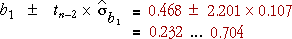

Confidence interval for the slope
The slope of the least squares line, b1, is a good estimate of the normal linear model's slope, β1, and the error in this estimate has a normal distribution,
error in estimate of β1 =
The estimate b1 has probability 0.95 of being within 1.96 standard deviations of β1, suggesting a 95% confidence interval of the form

Unfortunately the standard error depends on σ and therefore cannot be determined exactly. However we can obtain an approximation

If this approximation is used, the constant 1.96 must be replaced by a larger value, tn-2, which is obtained by looking up t-tables with (n - 2) degrees of freedom.
A 95% confidence interval for the slope is
|
Most statistical software will evaluate b1 and its standard error for you when you fit a normal linear model, so it is fairly easy to evaluate the confidence interval in practice — you will not need to use any of the formulae above!
Tourist arrivals in Hawaii
Consider again the tourist arrival data for Hawaii between 1990 and 2002.
Since there are n = 13 data points, we look up t tables with 11 degrees of freedom to get the value 2.201. A 95% confidence interval for the slope is therefore

In words, we are 95% confident that tourism is increasing at a rate of between 232,000 and 704,000 per year.
| Warning: It would be dangerous to extrapolate this trend many years into the future — a linear trend may not continue. |